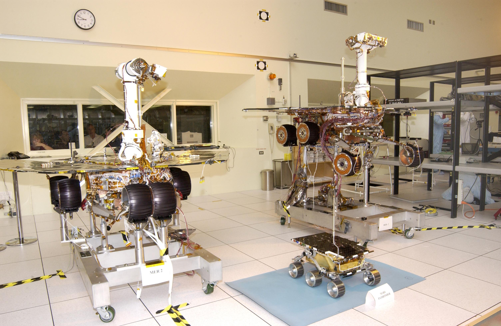
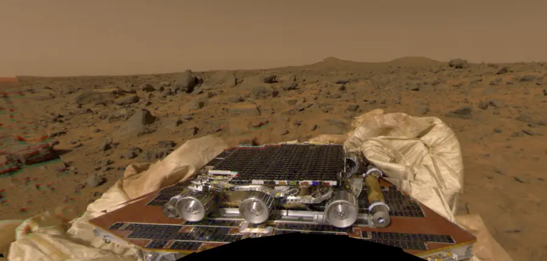

Demonstrate Low-Cost Exploration
NASA wanted to prove a 'faster, better, cheaper' approach—showing we could build, launch, and land on Mars at a fraction of past mission costs.
NASA MARS PATHFINDER MISSION · 1997
Follow the story of Mars Pathfinder and its rover, Sojourner.
Start the Journey
Rover Mass
Rover Height
Images From the Lander
Data Sent to Earth
WHERE DID IT GO?
Pathfinder landed in Ares Vallis, an ancient flood plain in Mars' northern hemisphere and one of the rockiest places on the planet.
DECEMBER 4, 1996
Mars Pathfinder lifted off from Cape Canaveral Air Force Station in Florida on a Delta II 7925 rocket.
WHY DID NASA BUILD IT?
Pathfinder was designed as a technology demonstration: deliver an instrumented lander and a free-roaming rover to the surface of Mars.
NASA wanted to prove a 'faster, better, cheaper' approach—showing we could build, launch, and land on Mars at a fraction of past mission costs.
Sojourner was humanity's first test drive on another planet, proving a small six-wheeled rover could safely navigate rocky Martian terrain
It acted as a blueprint for the future, testing suspension and navigation tech that paved the way for larger rovers like Curiosity and Perseverance.
Instead of staying in one spot, Sojourner drove right up to Martian rocks to analyze their exact chemical makeup.
It captured close-up surface images and data that helped confirm Mars once had flowing water in its ancient past.
HOW DID ENGINEERS DESIGN IT?
A parachute to slow the fall, airbags to absorb the impact, and a small rover to drive out afterward.
Built from lightweight aluminum the size of a microwave, its legs folded like origami to fit inside the landing capsule.
Engineers invented a jointed six-wheel system without springs, letting it climb over rocks without tipping over.
Because rubber would freeze and crack, it used thin metal wheels with tiny teeth to grip Martian sand and rocks.
To survive freezing Martian nights, engineers insulated its electronics with 'aerogel'—a super-light material known as frozen smoke.
A flat solar panel powered the rover, while small cameras and front lasers helped it see and avoid obstacles on its own.
Hitting the surface at about 31 mph (14 m/s), Pathfinder bounced around 15 times, sometimes as high as 50 feet (15 m). It came to rest about two and a half minutes later, roughly 1 km from the first impact point.
HOW DID IT WORK FAR FROM EARTH?
The mission sent data back to Earth from landing until its final transmission.
Too small to reach Earth on its own, Sojourner beamed data to the stationary lander, which relayed the signals across deep space to NASA.
Because signals took minutes to arrive, engineers couldn't steer it live—instead, they sent a daily list of target waypoints each Martian morning.
Using front lasers and cameras to scan the ground, Sojourner could spot big rocks or steep drops and steer around them on its own.
The mission returned 2.3 billion bits of data, including more than 16,500 images from the lander, 550 from the rover, and over 15 chemical analyses of rocks and soil. An atmospheric and meteorology instrument measured the atmosphere during descent and the weather at the landing site, and radio tracking pinned down the spacecraft's location.
WHAT DID IT DISCOVER?
Smooth, rounded pebbles proved liquid water once carved Ares Vallis, unleashing water volumes the size of North America's Great Lakes in just 2 weeks.
Weighing just 10.6 kg , Sojourner snapped 550+ photos and ran 15+ chemical analyses by pressing its X-ray sensor right against Martian rocks.
Airborne Martian dust turned out to be magnetic, stained with iron oxide left behind by an ancient water cycle.
Sensors caught swirling dust devils, spotted early-morning water-ice clouds, and tracked sudden morning temperature spikes.
Radio tracking of the planet's spin wobble revealed a central metallic core with a radius of 800 to 1,250 miles.

HOW DID IT HELP US UNDERSTAND THE UNIVERSE?
Rounded pebbles and an ancient floodplain carved by Great Lakes-sized water volumes in 2 weeks proved Mars wasn't always a desert—it once had stable, running water.
Pathfinder measured an 800-to-1,250-mile metallic core, magnetic dust, swirling dust devils, and morning ice clouds.
Weighing 10.6 kg , Sojourner bounced 15 times in airbags, rolled down a 20-degree ramp, and snapped 550+ images.
Pathfinder proved a new way to land safely on the Red Planet and delivered the first robotic rover to its surface.
Explore the Official NASA Mission Page